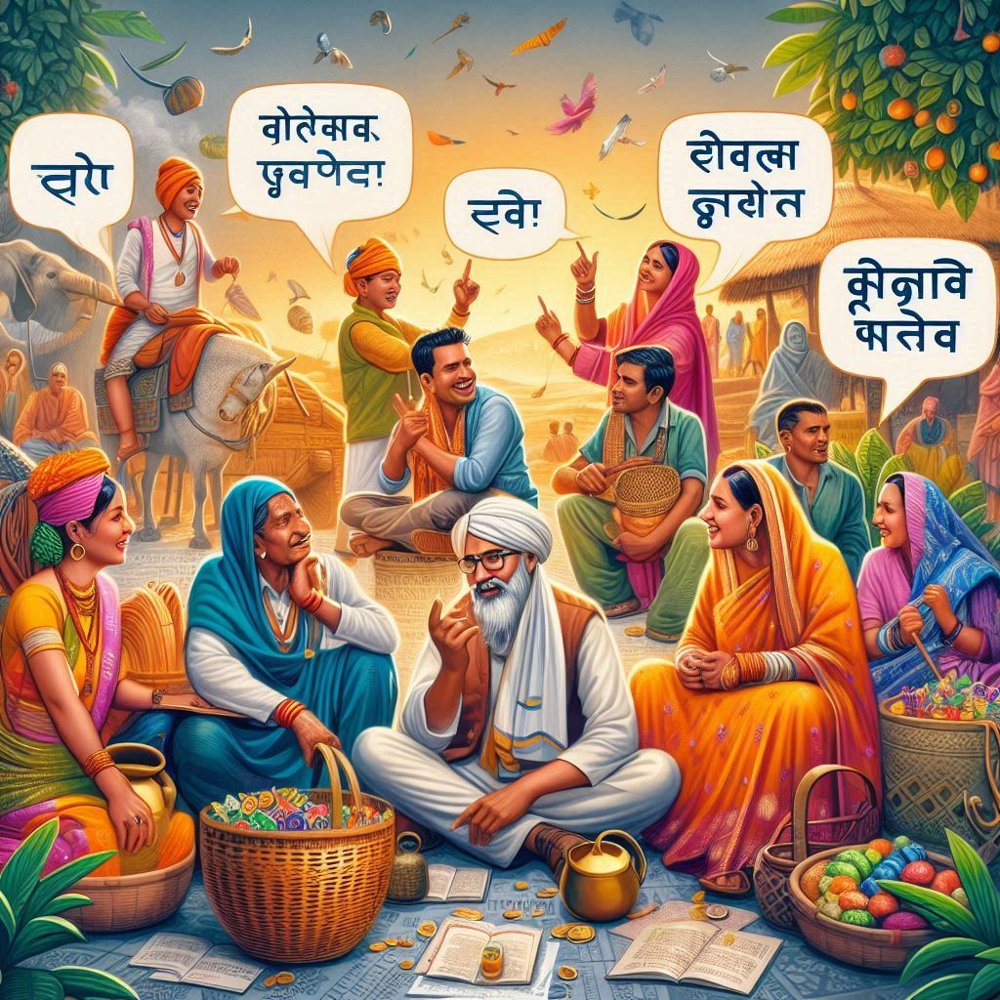
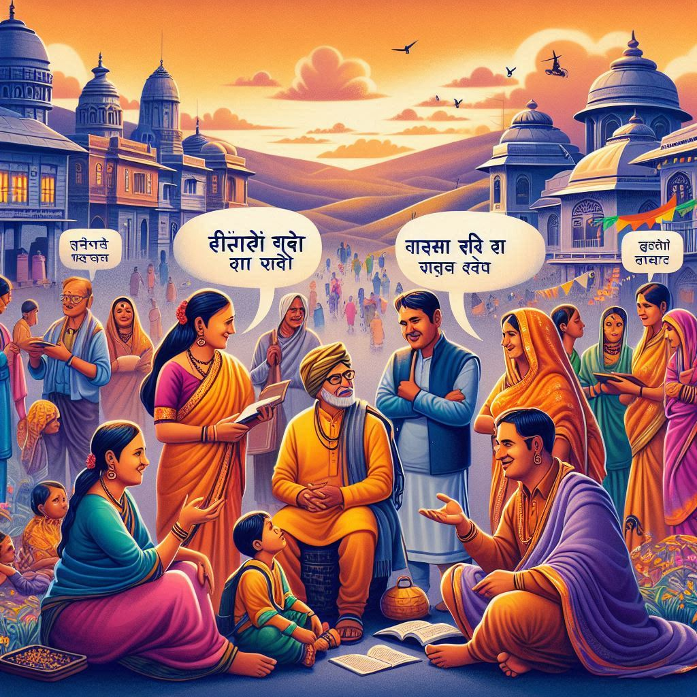

Languages of Madhya Pradesh
Madhya Pradesh is a linguistically diverse state in India, where a variety of languages and dialects are spoken. The state's linguistic landscape reflects its cultural diversity and historical influences, with languages from both the **Indo-Aryan** and **Dravidian** families being spoken by different communities. Here is an overview of the major languages spoken in Madhya Pradesh:
1. Hindi (Official Language)
- Hindi is the official language of Madhya Pradesh and is spoken by the majority of the population. It is the primary medium of instruction in schools and is used in government offices and administrative matters. Hindi in Madhya Pradesh has its own regional flavor, known as Madhya Pradesh Hindi, which includes several dialects and variations unique to different regions.
2. Marathi
- Marathi is widely spoken in the western regions of Madhya Pradesh, especially in areas like Khandwa, Khargone, and Indore. Marathi speakers in Madhya Pradesh are often descendants of people who migrated from neighboring Maharashtra, and the language is used in day-to-day communication, especially in urban and rural areas with a significant Marathi-speaking population.
3. Malwi
- Malwi is a dialect of Hindi spoken in the Malwa region of Madhya Pradesh. It is distinct in terms of pronunciation, vocabulary, and usage, and it is widely spoken in Indore, Ujjain, and Dewas districts.
4. Bundeli
- Bundeli is spoken in the Bundelkhand region, which includes parts of Sagar, Chhatarpur, and Tikamgarh districts. It is a dialect of Hindi, but it has its own unique vocabulary, grammar, and cultural significance. Bundeli is rich in folklore and literature and has a strong connection to the region's traditions.
5. Chhattisgarhi
- Chhattisgarhi is the official language of the newly formed state of Chhattisgarh, but it is also spoken by a significant portion of the population in the southeastern districts of Madhya Pradesh, such as Raigarh, Bilaspur, and Korba. It is closely related to Hindi and is part of the Eastern Hindi dialect group.


6. Gondi
- Gondi is spoken by the Gond tribe, which is one of the largest tribal communities in Madhya Pradesh. The language belongs to the Dravidian family and is spoken primarily in tribal areas like Seoni, Chhindwara, and Balaghat.
7. Bhili (or Bhilodi)
- Bhili is spoken by the Bhil people, one of the largest indigenous groups in Madhya Pradesh. It is a member of the Indo-Aryan language family and is primarily spoken in the districts of Jhabua, Alirajpur, Dhar, and Ratlam.
8. Bagheli
- Bagheli is spoken in the Baghelkhand region, which includes parts of Rewa, Satna, and Maihar districts. Bagheli is a dialect of Hindi and is spoken by the Baghel people, who are the predominant community in the region.
9. Rajbanshi
- Rajbanshi is spoken by some communities in the northeastern part of Madhya Pradesh. The language belongs to the Indo-Aryan family and is used by the Rajbanshi people, who are a distinct ethnic group in the region.
10. Other Tribal Languages
- Other tribal languages include Korku, Kolami, Kharia, and Saoji. These languages are primarily spoken in tribal areas and are part of the Dravidian and Austroasiatic language families.
Script and Writing Systems
- The primary script used for writing languages in Madhya Pradesh is the Devanagari script, which is used for Hindi, Marathi, Malwi, Bundeli, and several other dialects. However, languages like Gondi and Bhili also have their own traditional scripts, though they are less commonly used today.
Multilingual Society
- The linguistic diversity of Madhya Pradesh reflects the state's rich cultural heritage. The interaction between different linguistic groups has contributed to the development of a vibrant multilingual society, where people speak several languages and dialects depending on their region, community, and cultural background.
In conclusion, Madhya Pradesh is home to a variety of languages that reflect its rich cultural diversity. While Hindi is the dominant and official language, regional languages like Marathi, Bundeli, Chhattisgarhi, and tribal languages such as Gondi and Bhili play a significant role in the everyday lives of the people. The state's linguistic diversity is an important aspect of its cultural identity and heritage.